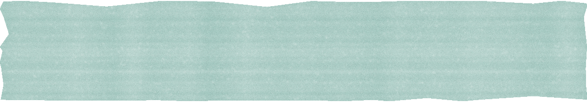
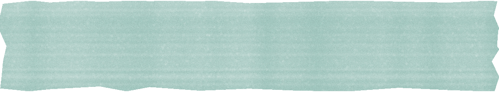

@fairhealth.br
Para o RH
Como levar a
fairhealth para
a sua empresa:

o passo a passo.
1
1º mês
Diagnóstico
2
1º ao 12º mês
Escritório do Cuidado
3
12º mês
Mensuração
Arraste para o lado →
Para o RH
o passo a passo.
1
1º mês
Diagnóstico
2
1º ao 12º mês
Escritório do Cuidado
3
12º mês
Mensuração
Arraste para o lado →

Passo 1 · No 1º mês

integrado.
Antes de cuidar, entender a população: o perfil de saúde com a fairdata e a avaliação de risco por área e faixa etária.
Perfil de saúde · fairdata
Risco por área e faixa etária
Prioridades por evidência,
não por suposição.
1
Passo 2 · Do 1º ao 12º mês

dentro da empresa.
Atendimento médico e psicológico num espaço físico, com médicos, psicólogos, assistentes sociais e felicitologistas em plantões alternados.
Anamnese e medições com bioimpedância e smartwatches.
Um Plano Individual do Cuidado para cada colaborador, com base na Medicina do Estilo de Vida, que também chega à empresa toda em workshops nos 7 pilares.
A proximidade aumenta a adesão.
A adesão gera resultado.
Conhece quem decide sobre saúde na sua empresa? Mande este post.
2
Passo 3 · No 12º mês

e consolidação.
Uma nova pesquisa da fairdata mostra a evolução dos indicadores, e sai o relatório de impacto para o financeiro e o plano de saúde.
Ao longo do ano, o RH acompanha com dados anonimizados e agregados no painel da fairdata.
3
E antes do passo 1?

falar com um

especialista.
Dessa conversa com o nosso time sai uma proposta sob medida para o seu time, e a implementação começa com onboarding e primeiros atendimentos.
Comente CUIDADO e enviamos na DM como o Escritório do Cuidado funciona na sua empresa.
Fica por último no post, mas vem primeiro na prática.
0